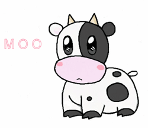

Por la necesidad de los lecheros de la región norte de Antioquia legalizaran su proceso de venta y tratamiento adecuado para la distribución de la leche, nace esta corporación lácteos la vaquita el 20 de octubre de 2003 se hace la primera junta de lecheros donde se toman decisiones que fijan la misión la visión y la razón de esta empresa que es creada del pueblo y para el pueblo, pues los beneficios son para una comunidad soñadora que espera la conformación solida de este proyecto empresarial que cambiaría la manera en la que se observa el campo y en que se distribuyen los productos.
El 15 de septiembre del año 2004 se hace un nuevo comité que lanza ideas innovadoras que partirían la historia de la empresa en dos antes y después de los derivados lácteos, pues se decide desde el momento no solo pasteurizar la leche si no también hacer queso, yogur, Arequipe, y mantequilla.
pero Espere que hayamos creado una gran experiencia en el campo empresarial. Somos una empresa 100% Guatemala está comprometida con Marketing de los medicamentos
El éxito de esta primera fase ha sido corto pero productivo, nos ha dado impulso para seguir ofreciendo crecimiento consolidando otros servicios en el comercio a nivel Centro América somos de las pocas empresas que ofrecen calidad en cada uno de sus productos brindando confianza en su higienización.
Contamos con un equipo excelente de profesionales con verdadera vacación de servir al cliente. Esto unido a la calidad de nuestros productos y servicios, una política de precios competitivos, amplios conocimientos del mercado haciendo uso de la tecnología y con una esmerada selección de nuestras alianzas de negocio que son factores fundamentales de nuestro liderazgo en el mercado.
Hoy en día es una empresa pionera en lácteos que renueva sus metas y visiones para cumplir los sueños de un pueblo soñador.

Lácteos 100% guatemaltecos
De La Vaquita Express es una tienda virtual que cuenta con producto producido únicamente en Guatemala. Se dedican a la venta de lácteos artesanales con sabores únicos y diferente. Estos son algunos de los productos que puedes pedir a domicilio:
Queso fresco entero en bandeja Q 25.00
Requeson Q 12.00
Queso de capas con loroco Q 28.00
Crema 100% pura Q 14.00
Queso duro Q 11.00
Yogurt natural sin azúcar Q 22.00
Queso de pita Q 19.00
Queso de capas con chile Q 25.00
Mantequilla lavada Q 18.00
Mantequilla de costal Q 18.00
Qué orgullo estas empresas que como De la Vaquita Express ofrece lácteos a domicilio en la Ciudad de Guatemala. Ideal para degustar algo guatemalteco sin salir de tu hogar. ¡Qué lo disfrutes!